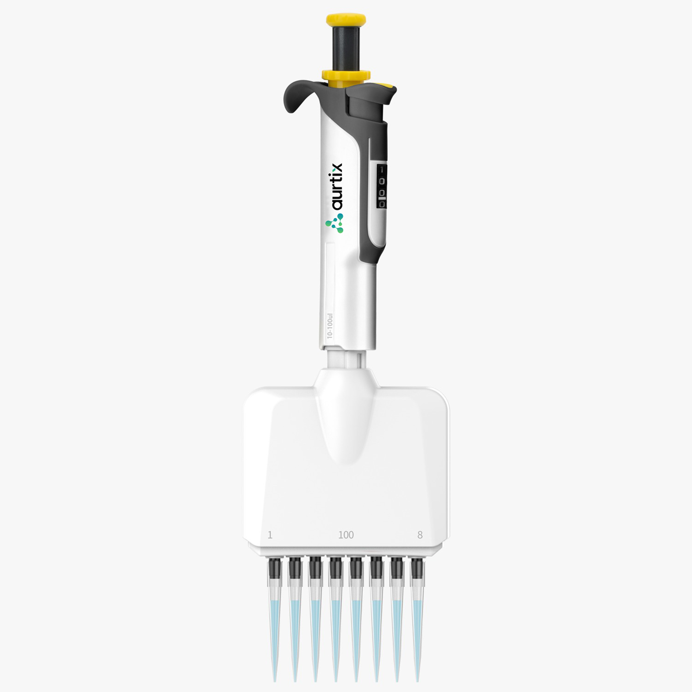

Explore More

Aurtix Neo Multi-Channel is our premium plate-pipetting instrument — built for labs running high volumes of 96- and 384-well work where channel-to-channel consistency and operator comfort directly affect throughput and data quality.
The Aurtix Neo Multi-Channel (catalogue name: Hi-pette Mechanical Pipette) pairs Neo's lighter, more ergonomic plunger action with the demands of repetitive plate-based pipetting. Across 8 or 12 channels, the mechanism is tuned to keep force low and consistent, which matters enormously when a single protocol calls for hundreds of individual dispenses in a session.
Every channel is calibrated to tighter tolerances than the standard Lite range, so well-to-well variation stays low even in demanding assays like ELISA, qPCR set-up, and cell-based screening. The reinforced, fully autoclavable lower assembly holds up to frequent sterilisation and chemical exposure without drifting out of calibration.
Aurtix Neo Multi-Channel is the instrument we recommend for labs where plate throughput is constant and the cost of channel-to-channel inconsistency is high.
| Specification | Detail |
|---|---|
| Catalogue Name | Hi-pette Mechanical Pipette |
| Channels | Multi-channel (8 / 12) |
| Volume Range | 0.5 µL – 1200 µL |
| Adjustment | Fine-tuned shared mechanical dial with click-stop lock |
| Accuracy | Conforms to ISO 8655 requirements, premium-grade tolerances |
| Sterilisation | Fully autoclavable lower assembly (121 °C) |
| Tip Compatibility | Universal — fits Aurtix and all major tip brands |
| Calibration | Factory calibrated; user recalibration supported |